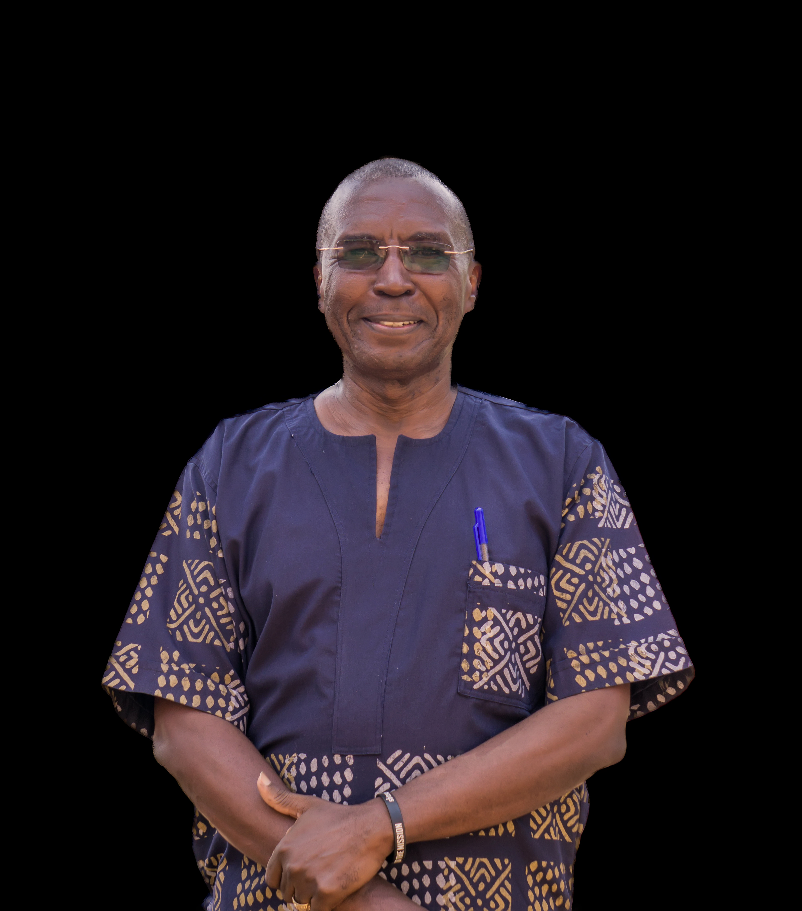
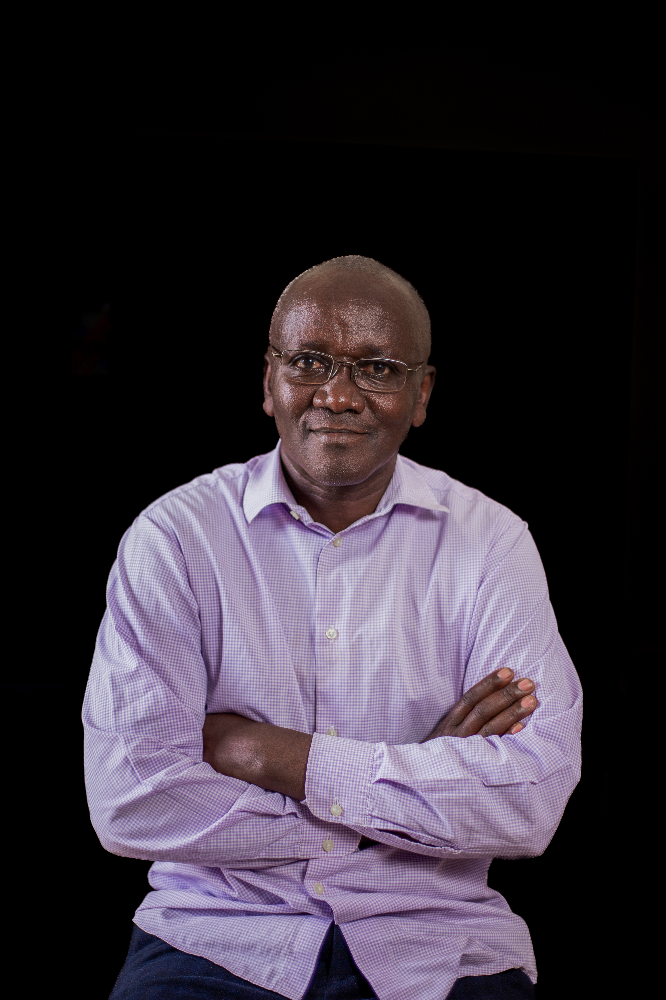
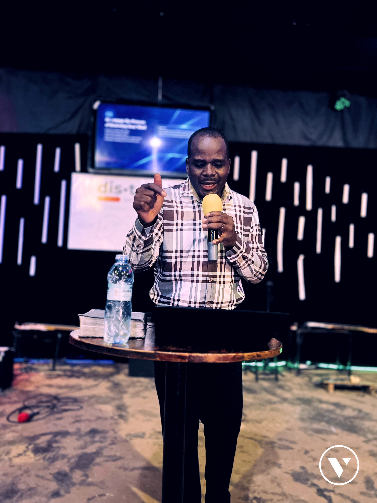
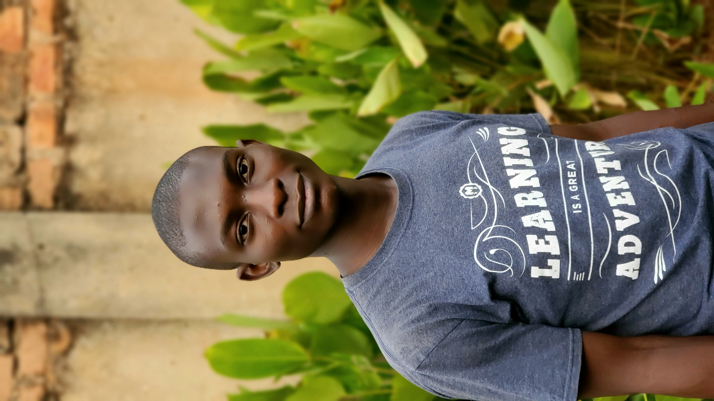

Principal: Pastor Darryl Woodson
B.A. Communications And Broadcasting.
Lecturer: Principles Of Communication
Pastor Victory Church Ntinda.
Missionary Pastor With Over 20 Years Experience, Former Country Director Of Fresh Start And Teen Challenge Uganda
Pastor Lorraine Chern Woodson
Lecturer: OT100 Old Testament Survey
Pastor At VCC Kireka
Missionary Church Planter With Over 20 Years Of Experience In Pastoral Care

Pastor Odoi Dennis
Bachelors Of Arts In Psychology From Makerere University, Kampala.
Masters Of Divinity From Africa International University.
Certificate In Leadership From Haggai Institute, Singapore
Lecturer: TH100 Hermeneutics

Doctor Kanyesigye Edward
M.A. Global Leadership From Fuller Theological Seminary.
Executive Director, Victory Africa Ministries.
Lecturer: TH100 Bible Doctrines

Pastor Kephous Ndinywa
Bachelor Of Theology
Lecturer: Prayer And Deliverance
National Overseer Of Assemblies Of God Uganda Church Pastor And Evangelist.
Pastor Rebecca Ndinywa
Pastoral Leadership Training- Singapore
Lecturer: Church Planting, MN230 Children's Ministry
Church Pastor And Evangelist With Experience Of Over 30 Years.
Pastor Didas Mwesigye
Bachelor Of Theology
Lecturer: Social Projects
Country Director Of Teen Challenge Uganda.
Church Planter- Hope Village Gulu.

Pastor Andrew Were
Bachelor Of Theology
Lecturer: NT100 New Testament Survey
Pastor Of VCC Kira
Ministry Coordinator VFC Uganda.

Pastor Moses Nsubuga
Bachelors In Community Development And Social Justice
Lecturer: MN210 Transformational Development And The Church
Pastor Of Victory City Church Rubaga.
Pastor Treasure Lwantale Nsubuga
Bachelors Of Commerce,
Lecturer: Small Business Practice
Social Worker That Has Initiated Shelters And Small Enterprises For Marginalized Persons In Different Communities.

Pastor Trust Nongo
Bachelors Of Counseling
Lecturer: LD205 Biblical Principles Of Marriage
Pastor Victory City Church – Mutungo
Country Representative Of The Marriage Course

Pastor Maureen Nongo
Bachelors Of Counseling
Lecturer: LD205 Biblical Principles Of Marriage
Pastor Victory City Church – Mutungo
Country Representative Of The Marriage Course